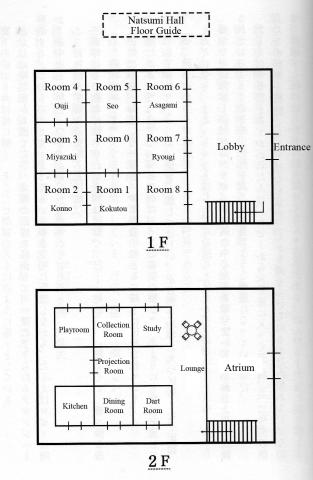

Chapter 2
14:00~16:30
01.
----It was as if she had heard someone calling out, Shizune Seo opened her eyes.
The time just passed 7pm.
She picked herself up from the high-grade leather sofa and gave a little yawn.
“…I really fell asleep… One person in the whole cinema, how boring…”
This was a home theater which is as big as a classroom.
Shizune Seo, the only audience, was really bored and finally fell asleep, the projector quietly played a film that was not really popular.
The screen was playing a horror thriller.
It was about a group of school girls that was trapped in the mountains, surrounded by zombies.
Shizune Seo watched till the end with an air of unconcern. To be more precise, because it was too gory that the attention of the movie had changed.
The speakers were playing BGM.
Even though the speakers were really loud, but her heart was unusually calm.
It must be due to the sound being too unrealistic. If there is only one person in the theater, no matter how loud the speaker you won’t feel that it was crowded.
Shizune Seo absently watched the unentertaining tragedy.
“…I thought that we already agreed on watching this movie together…”
But nobody came. The promise with Shizune Seo was completely negligible for the girls staying at the dorm.
Well, everyone should be tired, I thought optimistically.
It should be almost dinner. Should proceed to the kitchen to prepare some food. However, I didn’t have the energy to do anything at that moment, so I just continued to watch the horror movie that I didn’t even like in a trance.
The projectors sound.
The air conditions sound.
The fluorescence that was traversed in the dark room.
The surround sound that played the horrified scream of the main actor.
….Also, other than the speakers, there was someone else’s scream that came from outside the room.
“Really, at the end it really turned out to be this way.”
I sighed while getting up from the comfortable sofa.
“If everyone didn’t gather at the projector room, there will be a murder.”
I had already warned them about this kind of future, this bunch of people that gave me a headache. Shizune Seo pouted and left the projector room.
Because, it was also this kind of bad end. This kind of future. This kind of result.
We yet again lost our goal, we made life threatening mistakes on our way forward.
02.
I walked out of the projector room; the sound of the rain came from outside the building. It was 7 o’clock at night. The sunlight was not visible, and there was a limited amount of lights around, so most of the corridor was pitch black.
The corridor was interwoven with lights from manmade sources and the darkness of the night.
It was an ocean of multicolourness, or you can also say it was the like the curtains used during the funeral, both colors mixing together.
The corner of the corridor was abnormally bright; it was only here that was as dark as when you were in a cave.
I turned right immediately after leaving the projector room, walked past the corridors on the North side, headed towards the way that could access the lounge on the first floor. At the same time, due to my habit of memorizing insignificant small details. Such as the lights of 3 rooms during the way towards the foyer were not turned on.
This is the guest house of the Reien Girls Academy, Natsumi Hall.
The western-style building was built onto an area of 300 square meters, and the hall… is very fitting with the name of snake, a theme park with a quirky style.
The first floor of Natsumi Hall had guest rooms, while the second floor contained entertainment facilities.
There were 9 guest rooms on the first floor, but the links in between the rooms were really peculiar. Imagine one side of a cube. Divide the cube into 9 equal parts, with 3 rooms in each vertical and horizontal plane.
If it was just like that, you can say that it was really rare.
The most unusual part is the way the rooms were connected. The room in the center was room number 0 followed by the rest around it. From the top it is designed to be like a curled up snake. For example, for the person staying at room 1, they needed to get through from room 6, 5, 4, 3, 2, and also, the locks were from the other side, so you had to get the person living in the rooms to open the door. To get back to your room would use up a lot of energy. Even though there was a universal key, it was thrown into the furnace by the previous owner during its completion.
It was a deliberate defect in the structure.
It was more emphasized than the comfort of life.
There was a rumor that the fanatic architect by an alumnus built the building according to the request of ‘mysterious atmosphere of a stage that could be targeted by murder’. It was either the person whom made the request or accepted the request that had an incurable disease.
This year was the 7th year since the completion of the building.
For example, if there were 8 people staying in the rooms simultaneously, the snake god will kill everyone.
For example, the confinement of the illegitimate child of the Ouji clan.
For example, a Chthulhu that could destroy worlds that was sealed in the basement, and other supernatural stories.
However this time, everyone that was putting up for the night were gathered at the first floor foyer.
Needless to say, Shizune Seo just reached the foyer.
Azaka Kokutō, Asagami Fujino, Risu Miyatzuki, Shiki Ryōgi were in the same year as Shizune Seo.
As well as Misaya Ouji that was in senior high and former president of the student council.
In total there were 6 young ladies, silently staring at each other.
“_______”
At the instant when I witnessed this, I felt headache-like dizziness.
Shizune Seo was forced to see the most horrible future-----after 10 hours from now, 5 o’clock before dawn the next day, the illusion of her death.
“… I heard a scream just now, what happened, Shiki-chan?”
I adjusted my emotions before speaking to Ryōgi Shiki.
“Hm, something troublesome happened. We were waiting for you Shizune-san. Because we heard that among one of us were killed.” Ryōgi-san smiled, her entire looked filled with contrived elegance.
After ‘that’ happened during summer, Shizune Seo and Shiki Ryōgi became pen pals.
This time, Shizune Seo came to Natsumi Hall due to her sincere invitation. After all, the guest house was prohibited for students.
“….That-----one. Someone was murdered? That was not a joke right”
“Of course it was real. At this point of time no one would laugh at a murder even if it was a joke.”
That was a bit outdated… Ryōgi-san was as elegant as a butterfly at that moment and maintained her faint smile.
“Right, that was everyone. Let’s go back to the scene of the crime. Maybe some people may not want to follow, but it is also to be fair. No matter how you complain later it will only be a waste of time.”
Kokutō-san used an unquestionable tone to make a conclusion. She, Reien Girls Academy’s number one prodigy, was born with an air of leadership.
“….was the person really dead? Did you see wrongly?”
Asagami Fujino-san asked the question humbly. She looked like a Japanese doll, born with a frail body, she could only walk with crutches. It was rumored that her eyes were injured a year ago, but she could still somewhat see.
“Very good. That was very good Asagami-san! The murder at the cursed hall, it feels like a Pandora PV! My main character powers are going to increase again! Now let’s end this in gorgeousness again!”
The person that was singing while spinning in circles was Ouji-senpai that everyone loved. She couldn’t read the atmosphere, hence this level of noisiness everyone had already experienced before.
“…Sigh. Ouji-senpai’s optimisticness is a cure at this moment. Even though it makes you a little bit annoyed, it also lifted everyone spirits.”
Risu Miyatzuki-san mumbled to herself. Even though her looks were not as good as compared to Ryōgi-san and Kokutō-san, her eyes revealed firmness. This allowed others to have a feeling of ‘honesty, yet she would hit you back if you forced her’.
There were a total of 6 people in the foyer.
Azaka-san said, “Everyone’s here”. Thus, the 7th person that was not there….staying at Room 2 Fumio Konno-san, that was the one that was sacrificed.
***
03.
We were walking from the foyer to Asagami-san’s Room 6. From here, we went through rooms 5, 4 and 3 which were temporary corridors, and arrived at the scene of the crime at Room 2.
At the moment we walked into Room 2, the horrible sight caught everyone’s attention.
The whole room was pitch black.
No, more accurately, it was burned till everything became like that.
I indirectly thought about a canvas that was colored entirely with charcoal. There was an incident in the past that a building in Reien Girls Academy was entirely burnt down.
“Even though her whole body was almost burnt until it was unrecognizable, you could still recognize her stature. Konno-san’s height was 176cm, it is completely right.”
Azaka Kokutō stood in front of items that could be the victim’s belongings and reported to us.
In this room that was completely burnt, Fumio Konno’s body laid in the middle of the room.
She was completely burnt; at the place that she could have fallen onto was a thin black layer. It was the same as the ashes gathered on the ceiling, I heard someone mutter. Konno-san, who was good in basketball, was the only female student with this height. Among us, there were none that had her height, so it was determined that the body was Konno-san’s.
We silently observed the situation of the room.
Asagami-san and Miyatzuki-san that used to look honest were passionately investigating. It was as if we declared to not forgive the arsonist… The criminal left spider web traces of clues in the room.
“Even though the cause of death is unknown, from the burnt marks from the fire it’s apparent that it happened between 4-6pm.”
Ryōgi-san plainly said.
“Well, would it be too early to say that the cause of death is due to the fire?”
Misaya-san gingerly examined Konno –san’s body while retorting. Her boldness before was just a show.
“She could be already dead before the fire. Such as hit by a blunt weapon, stabbed by a sharp weapon, or ingesting poison before burning to death, those kinds of possibilities.”
“Hm, just as what Shiki-chan said. Any conclusion made now is still early. We still have no way of examining the body; we are just guessing now.”
I already knew the actual future and was not just guessing. But I can’t say it out loud.
Even though I proclaimed that ‘I could see the future’, it could only raise suspicion. Right now, the only person who knew that Shizune Seo is a seer is Misaya Ouji.
“…We cannot determine the killing method. Being burnt to this state is no different from dissecting a frog… However, I think we could still determine the killer. Is that right, Kokutō-san?”
Fujino Asagami smiled and glanced at Azaka Kokutō.
That smile sent chills down the backs of the rest of us.
“…What are you trying to say? Are you suspecting that I did it, Asagami-san?”
“I am just stating the obvious. The guest rooms of this hotel are arranged in such a way that the number is ascending from the inside outwards. The ones that could enter the crime scene are Konno-san in room 3, or Kokutō-san staying at room 1?”
Indeed, that was solid evidence, or rather it was an obvious exclusion method. Even though the motive and method were unknown, the number of suspects will be narrowed down if one would refer to the clue about the people who have the ability to enter the room. Due to the strange design of the hotel, the number of suspects was reduced down to 2 people.
“Hmph, what nonsense are you sprouting Asagami-san. Could you be more specific when referring to the situation, please? It should be that the only way that I could enter room 2 is only through the permission of Konno-san, however Kokutō-san could just quietly open the door and sneak in without Konno-san noticing right?” Miyatzuki implied.
“Hey, I didn’t noticed that yet. You are really detailed Miyatzuki-san.”
“E-even so, slow down a bit please. There was no one else that entered room 2?”
“I’m sorry, your theory is not plausible Kokutō-san. I could be sure of that when I was at room 4. There was no one that went through my room from 4 o’clock till now. No one will be able to escape my gaze that is like a hungry lioness pacing the room.”
“After that, Miyatsuki-san and Kokutō-san reached Ouji-san’s room door at half past seven right? They later ran out from room 3 in a panic-stricken state after discovering Konno-san’s body.”
“That’s right. Their faces were very serious, saying ‘something bad happened, please gather everyone quickly’. That was why we first headed to the lobby and met up with Asagami-san and Ryōgi-san.”
That’s right. The scream that I heard just as the song ended should be from Miyatzuki-san after she discovered the body. It was just like I am in a zombie movie.
“…That’s wrong. That one, it’s…”
“Well. Ouji-san’s action was more suspicious than ours. Why is senpai restless, wandering in circles in the room in the first place? You said you were like a lion, but at most you were like a lost squirrel.”
“Uh… I was, troubled when Shizune invited me to watch a movie. It was a rare chance that someone kindly asked me out, so it could not be rejected. But it was a horror film…. Yeah, it’s not very educational.”
“….Aah, you are actually scared… Ouji-senpai is a scaredy-cat that only knows how to act tough.”
“Exactly, I heard that she was extremely opposed to coming here as well.”
“Isn’t that great? Ouji-senpai is so popular among the lower year students because she acts like a princess, though it does annoy the heck out of others.”
“Yup, you’re spot on.”
“Hm, not bad.”
“Are you making fun of me?!”
Darn, it was not the time to bully Ouji-senpai.
We should contact the police first… But that was not probable. The only tool of communication is the phone of the staff office in the entire Reien Girls Academy. But we cannot leave now partly due to everyone agreeing on not opening the hotel’s entrance.
“The situation is like this in the end. Why don’t we stay here for the night, and we’ll get help later in the morning?”
“Alright. I agree with that. What about the killer? Shall we punish the suspects?”
“Punishment… As in we constrain and lock them up?”
“Hey, that is murder! If left defenseless in this situation, it would be so easy to be murdered! You guys want me to be the 2nd victim?!”
Kokutō-san words were intuitive remarks as she was a mystery maniac.
“However, this is the best way to control the situation; you might as well give it up. Everyone else will sleep better if you were tied up.
Asagami-san was always merciless when it comes to Kokutō-san.
At that moment, Miyatzuki-san raised her hand.
“…I have a suggestion. I will stay here with Kokutō-san for the night. ‘Here’ as in our rooms. Ouji-senpai will use her cupboard to block the door for one night. As for Kokutō-san and I… I’ll stay at room 1, Kokutō-san will sleep in room 3. That way, Kokutō-san that’s the most suspicious won’t have a way to leave room 3. When it’s morning, I can head to room 3. How’s that? It will be an entirely locked room right? Seo-san and the others will be able to sleep peacefully, and I can be rest assured.”
That is a pretty good idea. The idea of temporarily turning room 3 into an isolated room by making use of the fact that those rooms can only be locked on one side. (Please refer to the diagram if you are lost)
“What do you think, Kokutō-san?”
“….Since Miyatzuki-san suggested it already, I can only agree to it, and we are both suspects as well. Alright, I’ll spend the night at room 3. Please remember to open the door to room 4 in the morning.”
Kokutō-san unwillingly agreed to it.
We went our separate paths later.
Miyatzuki-san went to room 1, while Kokutō-san stayed at room 3.
The rest of us moved towards room 4 and used the cupboard and book rack to block the doorway. Later, we stayed at the lobby of the 2nd floor to continue our discussion.
***
04.
The time was 8 pm.
We were drinking tea made by Ryōgi-san at the lounge on the 2nd floor.
The atrium was built in such a way that it was well ventilated; the lounge was designed to look like an indoor balcony. The lights from the atrium were bright enough to light it up and somehow lifted our mood.
“A murder case really happened. Although I should not say this, but this is too careless.”
Ryōgi-san had a gentle smile on her face while she reached out for her cup. She was not affected by the slightest from the sinister situation.
“Are you not afraid, Shiki-chan? Or rather, are you not curious? This could be an impossible crime. Konno-san was murdered in a locked room, and the murder method is still unclear yet.”
“I am afraid. But I am not curious. No matter if it was Konno-san that ended up dead, or Kokutō-san or Ouji-senpai, it has nothing to do with me. I don’t care about things that are not interesting. If you really need to know, I am a little curious, no, I just want to know how the murder was done. How that room was burned, and how the fire was put out. It would not be possible from the point of view of a human being right?”
“Ah? I was certain the murderer was Kokutō-san because she has the ability to summon fire… She’s not the murderer?”
Asagami-san had not touched the tea that Ryōgi-san brewed; she just drank from her own tumbler. It is said to be some form of greenish juice made from several green vegetables, which had an indescribable taste, with apples. Healthy!
“There is no way. A normal person won’t be able to spit fire, let alone set fire to everything that they touched.” Ryōgi-san sat up in a cool way and denied.
“You could say that” Asagami-san, being the most sensible girl in Reien Girl Academy, said while revealing a smile that to others could mean as acceptance, but seemed to hide a deeper meaning.
“….”
Misaya Ouji observed their conversation. However, her attention was not on Shiki Ryōgi, but on Fujino Asagami.
“What’s wrong, Ouji-senpai? Wasn’t it you who suggested that everyone gathered here for discussion and tea?”
“Ahem, yes, that’s right Seo-san. I wanted to discuss a countermeasure with everyone. I’ll get straight to the point, who is the murderer among the other 2?”
“It must be Kokutō-san.”
“Unfortunately, it is Kokutō-san.”
Shiki Ryōgi and Fujino Asagami immediately replied. Even though the 3 of them were not close, they still trust in each other.
“Is that so… What is your opinion, Seo-san?”
“I…”
Shizune Seo did not have the confidence to accuse someone as being a murderer in reality. Even though she could ‘see the future’, ultimately it is just a vision of ‘the end’. It is not ‘Azaka Kokutō, or Risu Miyatzuki that killed Konno Fumio in this situation.
“I don’t know…But I feel that the murderer could be someone besides them.”
“Careful there, Shizune-san. What you just said means that ‘the killer is among one of us’. I won’t be merciful if you became my enemy.”
“Yeah. No matter how cute of an animal Seo-san becomes, I will still eat you up in one bite.”
“I, that’s not what I meant, what I mean is….”
“There would be the presence of an 8th person. Am I right, Seo-san?”
“Ouji-senpai…! That’s right. Isn’t this like a repertoire of a mystery? Maybe there is a suspect X that had not revealed himself yet.”
“That was too naïve…Do you have any evidence, Ouji-senpai?”
“….There is. Have you heard of the rumor about the undead disease in the Natsumi Hall?”
We shook our heads.
I had heard of countless rumors about Natsumi Hall, but this is the first time I had heard of the ‘undead disease’.
“I accidentally overheard it at the Ouji house. The Natsumi Hall used to be a sanatorium. There was a young lady that was infected with a new kind of virus…immortality illness. There was a billionaire that pitied her misfortune. He adopted her and hid her in a hotel or some sort.”
“Immortality…which could be the undead disease right? It could be a good thing, right? No end to your life. You could be young forever, popular forever, forever continue on this way.”
“Who knows? Let’s not touch on the topic of immortality, if there was someone with a body that ‘could not die no matter what’, I feel that that is the most horrifying thing. Ah, so that’s a snake. The snake that was reborn from its shed skin is a symbol of infinity. But the ending should be unfortunate. Even though it is out of good will, in reality, after seeing an ‘undying’ person, the owner of the hotel was terrified, he did his best to seal off the devil… right?”
Ryōgi-san said it elegantly as if she was singing, but there was a hint of earnestness. Even though she had little to no interest to find the killer, she seemed happy when discussing about weird rumours.
“…however, the hotel had been abandoned and handed over to the school? I don’t think there will be anyone like that here.”
“Of course. The owner of the Natsumi Hall passed away. There were no records nor documentation of the step daughter leaving the hotel though.”
“Are you implying that the girl with the undead illness is still here in the hotel…?”
“That is in the case or if the story is true…. Furthermore, you would know if you asked Miyatsuki-san, so I’ll say it first. This Natsumi Hall is originally owned by Juzo Konno-san (绀野重造). Fumio Konno is his only daughter.”
“!”
Hold on. The motive to kill Konno-san appeared all of a sudden.
“---I understand now. It is becoming more and more interesting now. Please don’t stall it anymore, Ouji-senpai. You already knew the name of the undead girl right?”
Ouji-senpai nodded her head.
“Her name is Kanata Ishizue, she committed a series of murders 7 years ago. She could not be executed even though she was to be given a death sentence. … I don’t need to further explain the reason she was here. Konno used the condition that he donated a huge fund, took her from the hands of the high judiciary because she would not die no matter what.”
***
05.
It was already 10 pm when we weren’t aware of it.
We swallowed our saliva due to the unexpected turned of events.
Or rather, we were thirsty after having more than an hour of long discussion.
“Allow me to be the one to brew a pot of tea for everyone.”
Asagami-san left her seat and walked towards the kitchen on the 2nd floor.
…Asagami-san was not fazed at all by the tale we heard just now.
“Shiki-chan, do we need to accompany Asagami-san?”
“It’s alright, don’t worry about the female ‘terminator’. Let’s go back to the topic, Ouji-senpai. How did Miyatzuki-san know about Konno-san’s situation?”
Ryōgi-san asked while she leaned forward as if she’s trying to open some sort of curious switch.
“Miyatzuki-san and Konno-san were roommates. They were really close and will discuss anything together no matter what. It seemed that Konno-san was really proud this morning.”
“They are here on a honeymoon or some sort.”
Ryōgi-san was disappointed.
“In the end, Konno-san did not meet the undead girl. The only one who knew about the undead girl should be Konno-san that was killed… The next step should be…”
“….To enter the room that no one had entered before, or rather, the room that no one is able to enter, Room 0.”
Room 0, located at the center of Natsumi’s Hall, has a door that cannot be opened.
When everyone was deciding on the room this morning, Room 0 was already locked.
We thought that the room was just locked at that time. Now the situation changed.
The guest rooms could only be locked from the inside.
If ‘that thing’ is still alive, who took the key to Room 0, what does the room look like?
“Let’s asked Miyatzuki-san. She should still be awake.”
Ryōgi-san stood up first.
“Please hold on. Let’s wait till Asagami-san returns to head there together. She would be worried if we suddenly disappeared.”
“That woman that travelled the Pacific Rim wouldn’t be because of such a small thing----Hold on. Why would she stay here?”
“Huh?”
The pitch of our voices rose at the sudden question.
The reason for Fujino Asagami staying at the Natsumi Hall was….What was it again?
“….I also doesn’t know about that. Do you know, Ouji-san?”
“I don’t know. Now that I think about it, Ryōgi-san, Seo-san, why did you 2 come to Natsumi Hall? I was here to collect bugs…No, I am here every day because I was collecting survey information of the area, what about you?”
“I am here because I was invited by Shiki-chan to spend the weekend together.”
“That’s right. I heard from someone that I know that no one could just casually use this place during the weekend, so I came. See, this is the invitation.”
“That is the seal from the chairman, and it seems real. So, everyone else is here for the same reason?”
“…We didn’t manage to verify the reason. I thought it was some sort of gathering going on the moment I saw everyone gathered when I arrived.”
“…It seems that… Asagami-san arrived earlier than Ouji-san.”
“Yeah, I came after noon. I was lost on the way here, thank goodness for Konno-san that I found my way here.”
“!”
Asagami-san came back while holding a tray with tea for everyone.
She showed us her usual calm grin after placing her tray down.
“So, what is it?”
“Oh yeah, I was lost, that’s why I was the last to arrive. ---Moving on, Asagami-san. Did Konno-san act weirdly to you? Did you happen to notice if she was nervous to see unexpected guests such as yourself showing up?”
“Who knows? I wasn’t close to Konno-san, so I couldn’t compare if she was any different form usual. However, she was cheerful while chatting with Miyatzuki-san. Their conversation includes ‘we had found the medicine, the illness could be treated’ or something. I wasn’t paying much attention at that time, I feel that there could be any special meaning to the conversation after discussing with you.”
“That’s the answer!”
We reposted.
“If this Ishizue or whatever her name is still here, wouldn’t Miyatzuki-san and Kokutō-san be in danger? Since room 4 was blocked and they cannot escape.”
“I can’t wait anymore, let’s head to Room 0 now.”
We rushed towards the atrium.
The 1st and 2nd floors were connected through the stairs, located at the lobby of the 1st floor. Even though it is rather obvious, I will emphasize on it because it is rather important.
“Kokutō-san, are you still awake?”
Ouji-san immediately yelled when she was close to the door leading to room 3.
….There was no reply. We moved the blockage. The door wasn’t locked. Kokutō-san did not lock the door from the other side.
“…”
The first thing that came into view was the ball of yarn.
No, it is a human yarn ball.
Azaka Kokutō was sitting on the floor and had both her hands out, dead.
***
06.
“Is that the death kneel in the legends?”
There’s no such thing, Ouji-senpai.
“The reason of death is due to multiple wounds at the abdomen area. It could be due to penetration from metallic balls at close range.
Ryōgi-san bent down to examine Kokutō-san’s body. She seemed to be pretty happy. She didn’t even show any sign to let poor Kokutō-san that died in that… position… to have any peace.
“…The aggressive Kokutō-san was finished off so cleanly…The theory of the killer in room 0 is becoming more and more real.”
“W-what about Miyatzuki-san?!”
Kokutō-san was already killed, so what about Miyatzuki-san at room1?
“Let’s hurry to room 1… It’s locked! Miyatzuki-san, please respond!”
There was no reply to the yelling.
“We have run out of options, please step away Seo-san, and let me think of a plan.”
“Shiki-chan, the plan….ahhh?!”
Ryōgi-san was suddenly wielding a katana in her hands.
She removed the katana from its sheath, pointed it towards the border between the wall and the door, and thrust the katana between the gap in the door where the lock was.
“There’s no way. That’s impossible.”
*Paka* The blade snapped cleanly. Ryōgi-san stuck out her tongue and gave an embarrassed smile. (テヘペロ)
“Hey!”
“Ahhh, Ouji-senpai, dodge! Or you’ll die!”
“Uwa!”
“Ah, the broken blade is imbedded onto Kokutō-san’s back…”
Room 3 unexpectedly became a scene of carnage.
Fortunately, Ouji-senpai only lost a few strands of hair.
“…Shiki-chan…”
“Don’t blame me. I think it’s impossible even with Jigen-ryū (示限流).”
That’s not the problem. The problem is you nonchalantly pulling out a katana.
“…sigh, there’s no other way. The situation has forced me to use this method.”
“Which method?”
Ouji-san took out something that resembled a Swiss Army Knife from her pocket and inserted the wire into the keyhole.
“O-ouji-san! Isn’t that a pick lock?”
“Be quiet. This is a hobby of a lady, lock-picking skills from the ‘lattice pie detective novels (新本格)’. This hotel is built after the war, so picking it should be eas… it’s open.”
Ouji-senpai entirely ignored the rest of us that were shell-shocked, walked through the burnt room 2 and reached the door to room1.
“The structure should be the same. Give me a moment.”
Ouji-senpai unexpectedly kept the audiences on hold.
We watched the back of our senpai that became a little more reliable than usual.
Suddenly, the ringing of the clock could be heard from the atrium. It was 12 o’clock midnight unknowingly. There were still 5 hours away from dawn, from the future that no one survives. If we could determine the killer and capture that person---at least we could change that future…
*sound of lock opening* “Well, that was easy… let’s open the door, is everyone ready?”
Ouji-senpai didn’t really have to ask any more questions.
How was the situation like in the room with Risu Miyatzuki in it?
‘Think about the problem/situation first, and then face it with a conscious mind’, that is the advice from Ouji-senpai.
We nodded, ‘good’ she said and opened the door to room 1.
“-----”
When the sight of room 1 was in view, everyone had to suppress their gag reflex.
There was a masterpiece placed in the center of the room.
That was a body twisted to look like a screw.
Only the head was spared without a trace of blood; the bottom half of the body was as dry as a twig, completely drained of blood. It had the name of Risu Miyatzuki.
“Miyatzuki-san…”
She’s dead too. We were dizzy from the smell of blood, which came from the door of room 0.
“…the blockage at room 4 was still intact which means that the area was still considered a sealed room. The hiding place for the person that killed Kokutō-san and Miyatzuki-san should be room 0.”
“That’s right. Are you still going to show off your skill, Ouji-senpai?”
“…Yeah. Even though I am really sorry, but it is the only way. Let us reveal the truth about Natsumi Hall.”
Once again, Ouji-senpai headed towards the locked door.
I shifted my view and my gaze landed on a pale Fujino Asagami that was leaning on the wall.
“Asagami-san..? Are you unwell?”
“...Yes. The smell is too strong…. I am sorry, I shall return to room 2 to take a rest.”
Asagami-san shakily left room 1.
I was contemplating if I should follow her.
“Are you done, Ouji-senpai? This is your last chance to shine, are you able to do your best?”
“Tsk… It seems like this is the only modern lock….No matter…I shall use my 2nd special ability….Alright, it seems like the condition is met, it should work…! But it didn’t work…”
The exchange between Ryōgi-san and Ouji-senpai seemed interesting. I decided to stay behind.
Ouji-senpai continued on her battle.
The only sound heard from this room that stank of blood was *kacha kacha*.
Shizune Seo laid the body of Miyatzuki-san on the floor before covering it up with the bed sheet out of pity.
Just as she completed the work.
“…Alright!”
Ouji-senpai’s triumphant voice was accompanied with the sound of the door being unlocked.
The hinge of the door moved as the old metal door opened.
The inside was a grey hospital ward that was made out of cement.
---In the rectangular cell laid a,
***
07.
“Dead body.”
There laid a body that looked like a teenager around the age of 14 on a simple steel bed.
She was wearing a pure white wedding dress.
As if she was just asleep.
Or that she died peacefully in her sleep.
“…..”
Ryōgi-san observed her with mild displeasure. Her expression was the disappointment as if of a young child waking up to empty Christmas socks on Christmas day itself.
“…Ryōgi-san, is she dead?”
“Yes, her heart had definitely stopped even though there is no obvious wound.”
“Didn’t she have the undead disease?”
“That’s right. However, it should have been treated, that’s why she’s dead. She finally had what she couldn’t before.”
“How could it…”
Ouji-senpai shakily leaned onto the wall.
“…..”
I was speechless. I thought I could finally see a specimen that would never perish, but once again I was disappointed.
“…In the end, the person that murdered Kokutō-san and Miyatzuki-san was not the one that was cured from the undead disease… Is that correct?”
“…If you didn’t think that way, there won’t be any solution left, Ouji-senpai. Room 0 till room 3 were properly sealed rooms. The perpetrator could only be the person inside…”
Right, the only person left is this Ishizue-san. The body could only be this stiff after 20 hours. Our opportunity was just right, if it were to be another night, it would have started to rot.”
“Wait, hold on Shiki-chan. Are you saying that this person…”
“That’s right, the first victim. Kokutō-san, nor even Konno-san was not killed by her.”
“_______”
Who was the killer of these people?
There were no motive and method. However, if one would use the process of elimination----
“Wait. Shizune-san, where did that Cloverfield woman, Asagami-san go?”
“Oh… Asagami-san, she went to the floor below…”
Ryōgi-san ran out towards the atrium without listening to everything.
We followed her…… When we were attempting to open room 0, Ryōgi-san entirely ignored Asagami-san’s condition…!
“Asagami-san, where are you?! Come out quickly!”
Ryōgi-san’s worried voice echoed at the atrium. There was no sign of Asagami-san at all, including the kitchen and canteen.
“Ahh, come to think of it”
I remembered the lights at the 3rd room at the northern side were on.
It had a sign on it that said ‘collection room’, with some kind of bad smell coming out of it.
“Shiki-chan, let’s head to the collection room!”
“That’s the exhibition room!”
We rushed through the pitch black corridor and reached the heavy wooden door.
The door was locked again, another sealed room. It is time for Ouji-senpai to shine.
Collection room, or known as the frame vault.
The walls were covered entirely with frames, while there were so many butterflies that filled those frames.
This is the exhibition room for insect specimens, no, thrift shop.
“Asagami, Fujino----“
That was the 5th body that used to have snow white skin, but was bitten by millions of poisonous bugs that turned the skin into patches of green.
The time now is 2 am.
There were 3 more hours till dawn, till the end.
***
08.
“____alright, let’s start.”
I made up my mind.
Shizune Seo that could predict the future was alone in the kitchen; she gave her cheeks a little pat to gain confidence.
09.
3 am, lounge at level 2. Misaya Ouji and Shizune Seo that couldn’t fall asleep listened to the rain while drinking black tea to warm themselves up.
“Shizune-san, where is Ryōgi-san…?”
She’s at room 7, because that’s the most suitable place to sleep. She said because Ishizue-san already passed away, so there’s nothing fun to do anymore, thus she went to sleep.”
“…sigh. That’s really troublesome, just like in the past. She was rarely motivated. While she was, it was only because of Ishizune, she entirely ignored the murders that happened.”
“Shiki-chan was really cold towards things that were not interesting to her, she was already like that since young.”
“Since young…? You knew Ryōgi-san before, Shizune-san?”
“Yes. My house was next to Shiki-chan’s house. And at the same time, the other side was Kokutō-san’s house. I am going to have the same surname with Kokutō-san after I graduate.”
“Al-alright. Even though I don’t really understand that, but it seems that you have a really complicated relationship.”
Ouji-san felt embarrassed and had to avert her eyes at the face that was filled with happiness. She didn’t predict that she would be fondly spoken to at this kind of situation.
“Is it not necessary to find the killer now? There are only a few of us left, senpai.”
“It’s alright. Because the killer was Asagami-san.”
Misaya Ouji gracefully sipped at the black tea and smiled.
The smile was more of a reassurance kind of smile, rather than a prideful one.
“Asagami-san was the killer…? But, she was….”
“That was suicide. She was probably backed into a corner, without a way out, thus she ate poison to kill herself. If not there won’t be any way to explain the locked room. The room was locked in, and there were no marks of struggles on the body… What else would it be other than suicide?”
“….but, it wouldn’t explain the other cases. If Asagami-san was the murderer, how did she killed Konno-san and the others that were in the sealed rooms?”
Ouji-san listlessly bowed her head.
After a few seconds of silence.
“Shizune-san. Even though it’s really sudden, but it is ultimately my hypothesis. Do you believe in superpowers?”
“____, huh?”
Superpowers, I couldn’t help myself as I blinked my eyes when I heard those childish words.
Misaya Ouji that could read Shizune Seo unconsciously backed away. ..It could be because “She wouldn’t believe in it, so that’s for the better”. She was always like that, her kindness that could ruin herself.
“I apologise, let me phrase it in another way. Fujino Asagami has the ability to observed and murder from a distance away. I can’t tell you her method, but she has it. It is one of her weapons, maybe she used the structure of the rooms to set some kind of trap. We don’t know how it works, or what the technique is, I’ll just call it ‘superpowers’.”
“To observe the target from afar… is it clairvoyance?”
“Clair…what is that?”
Ouji-senpai tilted her head in confusion. Even though she mentioned superpowers, it seems that she doesn’t have any knowledge about it. So, Fujino Asagami’s skill was considered to be a non-superpower kind of powers or something.
“Asagami-san is able to use long distances to be able to kill someone. Is that what you are trying to say, Ouji-senpai?”
“T-that’s right. Your comprehensive skill is quite remarkable Shizune-san. Even though I cannot explain in detail, she must have used some sort of small scale wireless electronic… *cough*, huh?”
Misaya Ouji immediately used her hand to cover her mouth.
However, it is already too late. The poison was already in her system.
“Agh…. Guh, ah…!”
She fell onto the carpet while dragging the contents on the table with her.
Misaya Ouji body twitched as she stared up at Shizune Seo that was peacefully sipping her tea.
“W..why? Killer, was, Asagami, Fujino…?”
“I don’t believe that, but I do believe in superpowers, Ouji-senpai. There are methods to murder from long distance, otherwise there will be 2 cases that will be unexplainable.”
The first is the death of Risu Miyatzuki, which should be done by Asagami-san. We… Shizune Seo, Shiki Ryōgi and Misaya Ouji were chatting at the lounge, Fujino Asagami left her seat. She should have done something at that time.
While the suspect that murdered Fujino Asagami was reduced till 3 people. Shizune Seo and Shiki Ryōgi as well as Misaya Ouji. Among them, Shizune Seo and Shiki Ryōgi were not the killer.
“The one that killed Asagami-san was you, senpai.”
“…Ugh…”
Senpai didn’t deny. It must be because she was dying, this person will not deny her own lies. She was good in that way.
“Shiki-chan said that ‘I am not interested in the murder cases’. At the same time she didn’t have any suspicious actions. So the one that was left is you, Ouji-senpai.”
“….because of…these reasons….you…poisoned me…? You really are daring, Shizune-san…you didn’t find any solid evidence, any method of killing…?”
“Even though I can see the future, but I don’t know the methods. I am not God. This is just a simple question of probability.”
“Probability…? Are you saying…that I…was suspicious…?”
“Miyatzuki-san and Asagami-san’s death were too weird and were not logical. However, there is another thing that bothers me about you, senpai.”
“What was it…?”
“Because you know how to pick locks.”
“Because of that!?”
*cough* Misaya Ouji violently coughed and fell to the floor.
10.
I gave a sigh and leaned onto the sofa due to the guilt from killing Misaya Ouji.
If I didn’t deal with the killer, the dawn will not arrive. No matter how many people that love and respect senpai, to avoid that future, I can only do this----that’s what I kept telling myself.
….What’s the use of that.
Even though the future was postponed, we didn’t have a future anymore.
There were too many people that had died.
We had blood on our hands.
Even though life goes on, if the truth is revealed, Shizune Seo’s life will be over.
Ahh---it’s this kind of ending again.
Why is the ending so really sad?
“…however, I will have a future now. I will see the dawn, and I’ll give myself up---ah?”
I lifted up my head.
How could that be? I closed my eyes to observe the future.
“…It can’t be. Nothing changed…. Was I wrong? Ouji-senpai was not the killer?”
No way. Misaya Ouji was the one that killed Fujino Asagami. Misaya Ouji did not deny the proof before she died.
So, I must have misunderstood a premise.
Such as, the killer could be me.
Such as, there could be one more person that did not turn up yet.
Such as----the killer could not be only one person.
I analyze the 1st to the 3rd murders.
The first victim was this Ishizue that was killed by Fumio Konno.
That was because she was the daughter of the owner of this hotel, so she should recognize this Ishizune person.
The 2nd victim, Fumio Konno was killed by Azaka Kokutō staying next door.
That was because she could just easily rush into room 2 and commit the murder.
The 3rd victim, Azaka Kokutō was murdered by Risu Miyatzuki.
She used the same method as how Azaka Kokutō murdered Fumio Konno.
“….So, this is…”
There would be a killer that accompanies the victim. There will not be a common reason (motive) among all of the murders. It was as if everyone gathered here at the hotel to be murdered.
---Bu dump.
Konno-san was here to treat (murder) Ishizue-san.
Even though the reason was not clear, but Asagami-san killed Miyatzuki-san.
Ouji-senpai that saw through Asagami-san killed her.
---Bu dump.
“So----what about me?”
Shizune Seo’s reason of staying at the hotel.
I reached into my pocket, there was the hotel invitation that she gave me.
---Bu dump.
“That’s great. There’s no one here left that will get in my way, Shizune-san.”
----*sound of foot step*
Shizune Seo didn’t even have the time to turn her head towards the murmuring she heard behind her.
Blood splattered across the lounge.
The brain that was chopped off saw the future that it has left the body.
…This kind of ending again.
I, closed my eyes silently.
Chapter 2 END